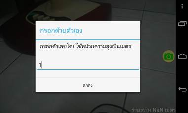
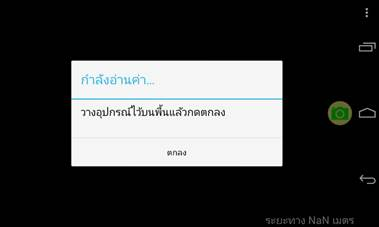
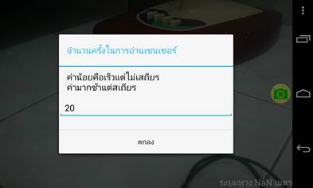
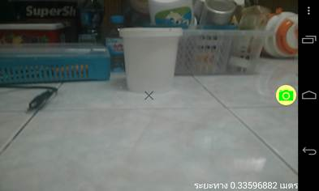

วิธีการใช้งานเมื่อเปิดใช้งานครั้งแรก
เมื่อเปิดโปรแกรมครั้งแรกจะพบกับข้อความว่าระยะทาง
NaN เมตร
(NaN มาจากคำว่า
Not a Number) ที่เกิดเหตุการณ์เช่นนี้ขึ้นเนื่องจาก
เมื่อเปิดใช้งานแอปครั้งแรกยังไม่มีการตั้งค่าใดๆจึงไม่สามารถคำนวณสมการ
ได้เนื่องจากสมการถูกหารด้วย 0
ให้ท่านกดปุ่มเมนูเพื่อเปิดกล่องข้อความในการตั้งค่าแอปพลิเคชัน
(ปุ่มเมนูอาจแตกต่างกันไปในโทรศัพท์มือถือแต่ละรุ่น)
ก่อนอื่นให้ท่านกำหนดความสูงของอุปกรณ์ที่ท่านใช้จากพื้น
(โดยทั่วไปพื้นหมายถึงพื้นที่ท่านยืนอยู่)
จากนั้นให้เลือกวิธีในการกรอกความสูง แนะนำให้เลือกกรอกด้วยตัวเอง เพื่อความแม่นยำ
(การใช้แรงดันอากาศต้องเป็นอุปกรณ์ที่รองรับและมีความคลาดเคลื่อนสูง)

กรอกความสูงที่ท่านต้องการ

หากใช้ความดันอากาศให้นำอุปกรณ์ของท่านไปวางที่พื้นแล้วกดตกลง

จากนั้นตั้งค่าจำนวนครั้งการอ่านเซนเซอร์เพื่อความแม่นยำในการคำนวณ

เพียงเท่านี้ท่านก็สามารถหาระยะทางจากอุปกรณ์ถึงวัตถุได้แล้ว
